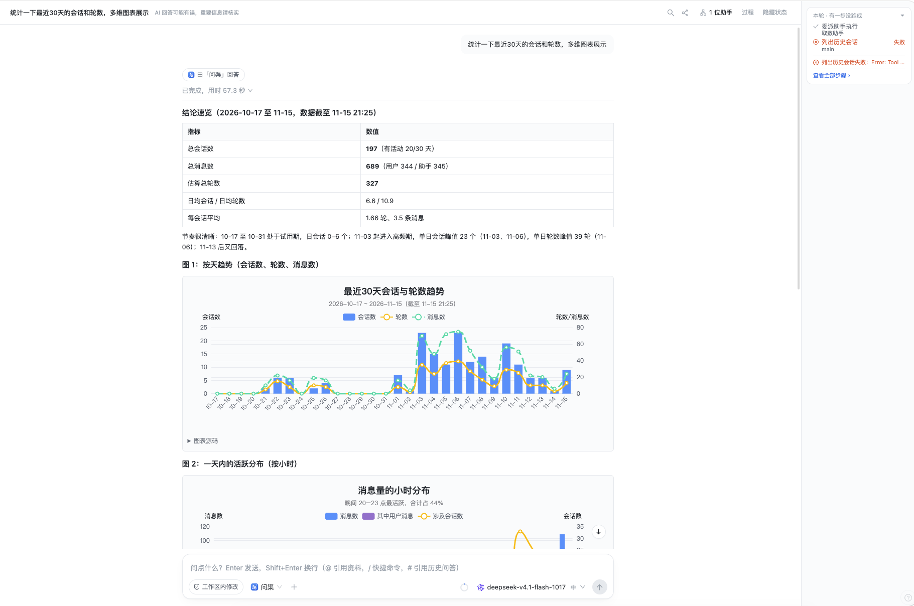
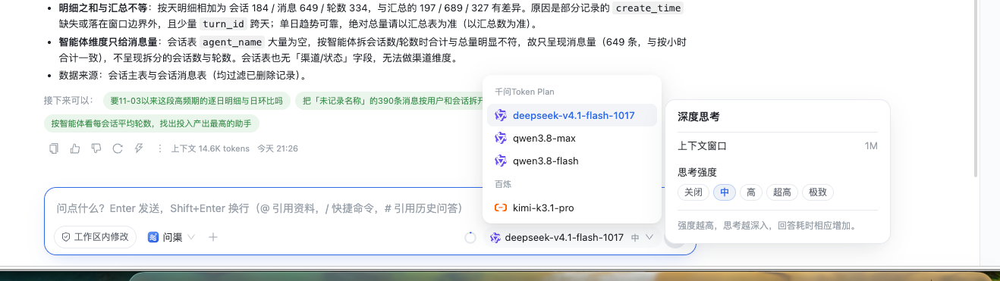
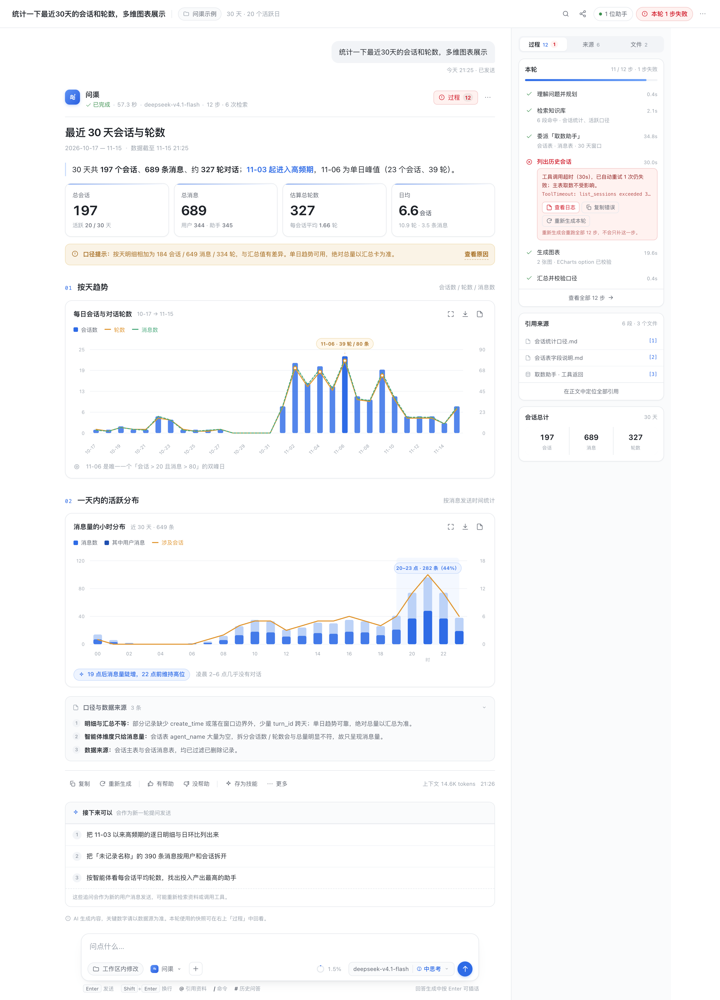
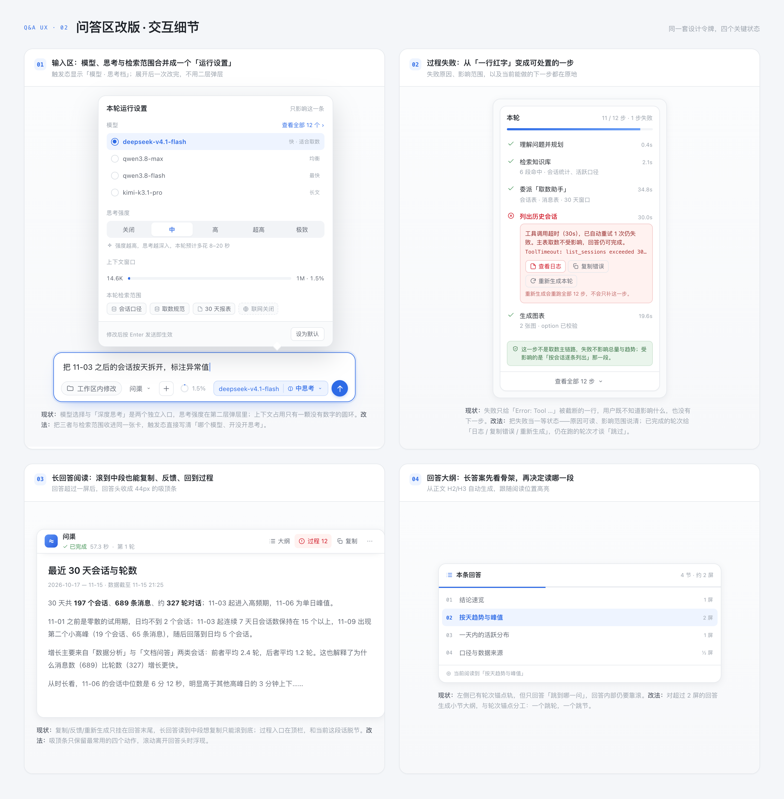

范围覆盖整块问答区：顶栏、回答头、正文与图表、动作行、右栏过程、输入区、长文导航。 结论是 不需要推翻现有三列骨架——当前的问题不在「少了什么功能」，而在三件事： 一条回答要同时说清身份、状态与出处；长答案没有结论层与内部导航； 失败与动作只被「显示」出来，没给出下一步。
三列（消息 / 输入 / 状态）是对的；但顶栏同时承担标题、工作区、免责声明、过程与状态，回答身份反而被压成一条灰字。
5 行两列的大表占满首屏，真正该先读的 4 个数字没有层级；口径说明放在最末，读者先看到数、后看到「数可能对不上」。
过程失败只剩一行被截断的 Error；回答动作只有四个图标且贴在底部。用户知道「出事了」，但不知道「现在能做什么」。
本轮「30 天会话统计」的实际截图
这是一条很典型的「重答案」：一个结论表、两张图、三段口径说明，右栏还有一次工具失败。它把当前问答区的问题一次性暴露了出来。


按「先改哪个收益最大」排序
下表只列会影响「读懂」与「接着做」的问题；纯视觉偏好（圆角、阴影、留白）不进入清单。P0 = 影响任务完成，P1 = 明显增加理解成本，P2 = 打磨项。
补充：顶栏把免责声明、过程、状态与标题并排（ChatPage.vue:7-37）属于 01–03 的共同根因，改法统一放在效果图的顶栏与回答头，不单列。
1440px · 完整问答区
保持三列骨架与现有设计令牌，只重排信息：一条回答的第一屏回答「是什么、跑完没有、数据可不可信」；第二屏开始才是图表与明细。

运行设置 / 失败处置 / 吸顶阅读 / 回答大纲
这四处是「静态全览图看不出来、但实际使用中最影响手感」的地方，单独出状态图。

触发态直接写「deepseek-v4.1-flash · 中思考」；展开后模型、思考强度、上下文、检索范围一次改完。只影响本轮是卡的默认语义，「设为默认」是显式动作。
失败步骤保留在时间线原位，展开为原因 + 影响 + 当前能做的动作。已完成的轮次不摆「重试这一步」——重新生成会重跑整轮，必须如实说明。
回答超过一屏后，回答头收成 44px 的条：身份、完成态、过程、复制、大纲。离开回答头时出现，回到头部时消失，不做常驻。
从 H2/H3 生成，带每节长度与当前阅读位置。与左侧轮次轨分工：轮次轨回答「跳到哪一问」，大纲回答「跳到哪一节」。
用来判断后续每个细节该不该加
身份、模型、完成态、用时、步数收进同一个回答头；正文里不再重复「由…回答 / 已完成」。ChatThread 的 body-before 与 TurnBar 合并为一个头部。
首屏只放结论与四个总量；差异说明紧跟结论；明细、源码、完整口径全部下沉。顺序错了，后面的信息再全也会被误读。
没有下一步的红色错误等于把焦虑留给用户。已完成的轮次给「看日志 / 复制错误 / 重新生成本轮」，运行中的轮次才谈「跳过」；做不到的动作不摆。
轮次轨解决会话级跳转，回答大纲解决答案内跳转。两者都只在内容超过一屏时出现，不做常驻装饰。
用哪个模型、开没开思考、会检索什么、上下文用了多少。快捷键与 @ / # 用法下沉到第二层，不占 placeholder。
本次所有改动都在现有组件与插槽里完成：右栏用分段、动作行加文字、回答头合并。没有新增一级页面，也没有新增设置项。
按依赖顺序，从低风险到需要接口配合
前四项是纯前端改动，可以独立上线；后三项需要助手输出约定或引擎能力配合。工作量按「熟悉这套代码的一位前端」估算。
kpi 围栏（与 echarts 同级），由助手显式输出；不新增围栏则退化为「表格首行加粗 + 数字右对齐」。避免把「优化」做成「重做」
出图之后按这些状态逐项核对
1440（右栏展开）、1200（右栏默认收起）、768 以下（H5 继承输入区与吸顶条）。每一档都要确认 --chat-col 与输入卡同宽同基准。
短答（不足一屏）不出现吸顶条与大纲；长答（≥2 屏）两者都出现，且大纲高亮随滚动更新。
失败且可跳过、失败且回答不完整、降级但已完成。三种都要给出不同的文案，不共用一句「出错了」。
空闲 / 生成中可插话 / 附件或 @ 引用已挂。运行设置触发态在三种状态下都要能正确显示模型与思考档。
只换 token；公开分享页复用 AnswerActions 与 ChatInput，不得出现主对话页有、分享页没有的第五个动作。
图表卡头、动作行、吸顶条都不能破坏 markdown 的增量重绘与 echarts 缓存（markdown.js 的 data-done 幂等）。